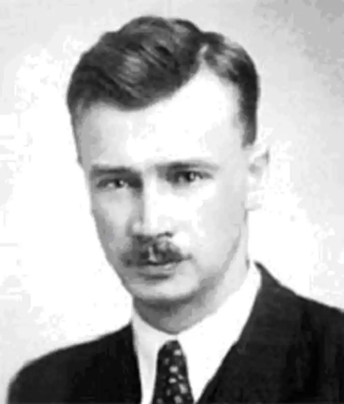

Олег Ольжич
(1907 — 1944)
Ольжич — один із псевдонімів Олега Кандиби (М. Запоночний, Д. Кардаш, К. Костянтин, О. Лелека), син Олександра Олеся, народився 8 липня 1907р. у Житомирі. Навчався в Пущі-Водиці під Києвом, проте середню освіту йому довелося здобувати у Празі. У 1923p. він, виїхавши разом з матір'ю з України, охопленої чадом класової ненависті, в Берліні нарешті зустрівся з батьком, який перед цим склав обов'язки повпреда УНР у Будапешті. Невдовзі родина Кандиб переїхала до Горніх Черношинець під Прагою. Ольжич став студентом Кардового університету, водночас навчався в Українському вільному університеті. У 1929p. написав дисертацію "Неолітична мальована кераміка Галичини". Перед ним відкривалися двері науки, він брав участь у багатьох археологічних розкопках, зокрема на Балканах. Працюючи в Гарвардському університеті (США), у 1938р. заснував там Український науковий інститут. Але Ольжичу судилася інша доля. Коли виникла ОУН, він стає одним з найактивніших її членів, керівником культурного сектора, а згодом — заступником голови проводу ОУН. За дорученням цієї політичної організації Ольжич брав участь у проголошенні демократичної Карпатської України, очоленої А. Волошиним, знищеної 14 — 15 березня 1939р, угорськими фашистами у змові з Гітлером. Поет навіть потрапив до хортистської тюрми. У 1940р. стався розкол ОУН. Ольжич, належачи до фракції мельниківців, під час другої світової війни очолив відділи ОУН на Правобережжі України, зокрема в Києві, був одним із фундаторів Української національної ради (5 листопада 1941p.), якою керував економіст М. Величківський. Оскільки рейхскомісаріат наприкінці 1941р. заборонив діяльність ОУН, то вона перейшла у підпілля, переїхавши до Львова. Тут він одружився з дочкою літературознавця Л. Білецького Катериною (Калиною). Проте подружнє життя було недовгим. Заарештований гітлерівцями, Ольжич потрапив до концтабору Заксенгаузен, де 10 червня 1944р. був закатований гестапівською трійкою (Вольф, Вірзінг, Шульц). Олег Ольжич — яскравий представник дітей першої еміграційної хвилі, які спромоглися не лише зберегти, а й примножити пасіонарну енергію українського народу, зруйновану на Наддніпрянщині (репресії, голодомор, вигублення культури). "Хай воскресне столиця Андрія, Дух вояцький в народі!" — такою метою і жив Ольжич, як і його покоління за межами Батьківщини. Його вірші, пройняті цією ідеєю, друкувалися на сторінках емігрантської періодики, здебільшого у редагованому Д. Донцовим львівському журналі "Вісник" поряд з поезіями Є. Маланюка, Л. Мосендза, Олени Теліги, згодом Юрія Клена. Відтак поети отримали умовну назву "вісниківської квадриги". Збірки Олега Ольжича "Рінь" (Львів, 1935), "Вежі" (Прага, 1940), "Підзамчя" (1946) відмінні як за змістом, так і за формою. Першій та останній властива витонченість поетичного стилю, інтелектуальна напруга, в якій вчувається почерк ученого. Проте вірші живилися чистим ліричним джерелом, у них немає сухого сцієнтизму. Друга — пронизана імпресіоністичним спалахом почуттів, позначена яскравою тенденційністю політичного гасла. Водночас три книжки мають спільну рису: підкреслену історіософічність, де минуле і сучасне витворюють складну й нерозривну проблему. Фах археолога чи не найбільше виявився у збірці "Рінь", історія тут постала як жорстоке самоствердження чи фатальна розірваність, і лише зрідка спалахувала світла тональність естетизованого первісного гомеостазу ("Наше плем'я не є велике", або "Скільки сонця ллється на землю..."). Багата на драматургію думки й почуття, лірика Ольжича ощадна в художніх засобах, тяжіє до класично випрозореної форми. Саме в цьому він стояв чи не найближче з-поміж "вісниківської квадриги" до київських "неокласиків" і, до речі, цього не приховував. За аскетичною афористичністю строф лірики Ольжича постає напружена думка борця, що простує над прірвою екзистенційності до великої мети. Все це на повен голос пролунало у "Вежах", де замість заглиблень в історію відчувається гаряче дихання сучасності, риторичні формули-гасла відтворюють атмосферу тривоги й готовності до боротьби. Помітне місце у збірці посідала поема-хроніка "Городок. 1932", де йшлося про суворе життя українських підпільників за умов дифензиви. Друга частина "Веж" складає цикл "Незнаному воякові" — своєрідна естетизована політична програма українського підпілля тих літ. Виступаючи з прямим осудом безперспективної інерції українства, Ольжич закликає не примирятися з принизливим животінням раба. "Підзамчя" — посмертна збірка Ольжича, хоча він її підготував ще 1940р. Вона синтезувала творчі пошуки поета часів "Ріні" та "Веж", засвідчила високу культуру його художнього мислення, схильність до філософських узагальнень духовної дійсності, її драматичних колізій. Поета завжди цікавили горді й нескорені постаті ("Муки св. Катерини", "Пророк"). Його лірика — це сповідь воїна, відкритого й чесного в бою, який чітко усвідомлює, що тільки ціною власного життя прокладається шлях до свободи, до виборення права бути органічним складником генетичної пам'яті народу ("Триптих"). Ю. Ковалів Історія української літератури ХХ ст. — Кн. 2. — К.: Либідь, 1998.